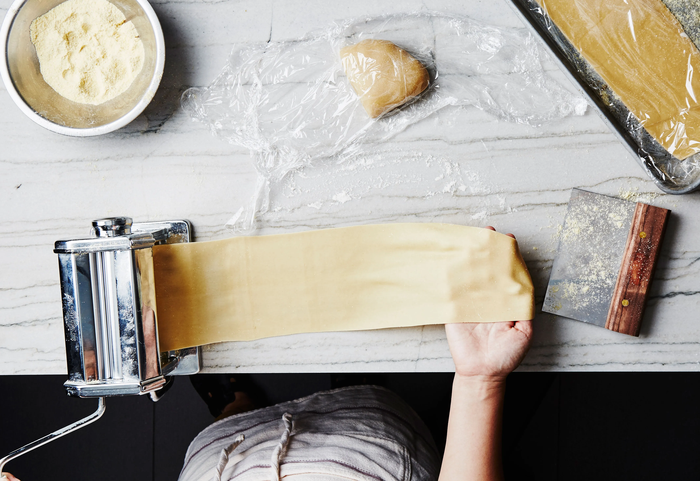

Gluten-Free Chocolate Chip Cookies

Ingredients:
- 2 cups gluten-free all-purpose flour (I use Cup4Cup)
- 1 teaspoon baking soda
- 1/2 teaspoon salt
- 1 cup unsalted butter, softened
- 1 cup granulated sugar
- 1 cup brown sugar, packed
- 2 large eggs
- 2 teaspoons vanilla extract
- 2 cups chocolate chips
Instructions:
- Preheat the oven to 350°F (175°C).
- In a medium bowl, whisk together the gluten-free flour, baking soda, and salt.
- In a large bowl, cream together the softened butter, granulated sugar, and brown sugar until smooth.
- Beat in the eggs one at a time, then stir in the vanilla extract.
- Gradually add the dry ingredients to the wet ingredients and mix until well combined.
- Fold in the gluten-free chocolate chips.
- Drop rounded tablespoons of dough onto a parchment-lined baking sheet.
- Bake for 10-12 minutes or until the edges are golden brown.
- Allow the cookies to cool on the baking sheet for a few minutes before transferring them to a wire rack to cool completely.
Gluten-Free Pasta Recipe
Ingredients:
- 2 cups gluten-free all-purpose flour
- 3 large eggs (About 1 egg per person)
- 1/2 teaspoon salt
Pasta dough is finnicky so these amounts are just guidelines
Instructions:
- In a large mixing bowl, combine the gluten-free all-purpose flour and salt.
- Make a well in the center of the flour mixture and crack the eggs into it. You'll see people on the internet do this on the table with a mound of flour, they're making life so much harder on themselves.
- Using a fork, gradually incorporate the flour into the eggs until a dough starts to form.
- Knead the dough on a lightly floured surface for about 5-8 minutes. Keep working until the dough starts sticking to your hand too much. Then add more flour. Repeat this until the dough only slighlty sticks to your hand.
- Cover the dough with plastic wrap and let it rest for at least 30 minutes at room temperature. This allows the flour to fully hydrate.
- After resting, cut the dough into smaller portions. Take one portion and roll it out with a rolling pin until it reaches your desired thickness.
- As you roll the dough, it should feel smooth and elastic. If it's too sticky, add a bit more flour. If it's too dry and crumbly, add a touch of water.
- Once rolled out, you can cut the pasta into your preferred shape.
- Cook the gluten-free pasta in a pot of salted boiling water for 2-4 minutes, or until it reaches your desired level of doneness.
- Drain the pasta and serve with your favorite gluten-free sauce (Like the one we're about to make next)!
Gluten-Free Beef Stroganoff

Ingredients:
- 1 pound London Broil, thinly sliced
- 2 tablespoons olive oil
- 1 onion, finely chopped
- 2 cloves garlic, minced
- 8 oz gluten-free pasta (I'd use the pasta recipe above)
- 1 cup beef broth
- 1 tablespoon gluten-free Worcestershire sauce
- 1 tablespoon Dijon mustard
- 1/2 cup sour cream
- Salt and pepper to taste
- Fresh parsley for garnish
Instructions:
- Cook the gluten-free pasta according to the instructions. Drain and set aside.
- Heat olive oil in a large skillet over medium-high heat. Add the sliced London Broil and cook until browned. Remove from the skillet and set aside.
- In the same skillet, sauté the chopped onion until translucent. Add minced garlic and cook for an additional minute.
- Pour in the beef broth, Worcestershire sauce, and Dijon mustard. Stir to combine.
- Bring the mixture to a simmer, then add the cooked London Broil back to the skillet. Simmer for 5-7 minutes until the beef is cooked through.
- Stir in sour cream and season with salt and pepper to taste. Cook for an additional 2-3 minutes.
- Serve the beef stroganoff over the cooked gluten-free pasta.
- Garnish with fresh parsley and enjoy your delicious gluten-free beef stroganoff!